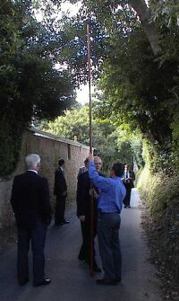
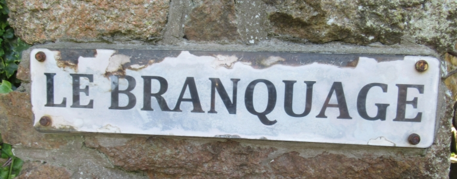

Moussieu l'Editeu,

Comme ous avez sans doute r'mértchi par bordée, la Merrienne et mé j'n'accordons pas tréjous. Aut'fais, quand ou m'faisait mârri par san têtoignage, j'en disais un mio trop et l'r'sultat bein souvent ch'tait qu'j'attrapais un pot-à-tais ou même une cast'role à la tête. Heutheusement, la bouonnefemme, tch'y n'éthait jamais tait dans les prix ès Landes ou à Crabbé, n'faisait pas tréjous des bulls, mais trais fais hors de quatre y'avait tchiques ozannes à r'pathé.
Ach'teu, Moussieu, ch'n'est pas d'même, car en vieillissant, j'avons touos les deux apprint un mio d'avis. a cause de chonna, chein qu'ou m'dit hier au sé, au sujét des Vîsites du Branchage n'eut pas tant d'êffet comme il éthait yeu tchiquefais, mais, avec chonna, y fallait bein l'y dêmontré qu'oulle avait tort.
"Chais Visites du Branchage," ou s'fit, "ayant liut plusieurs annonces au sujét, tchèsqu'y valent au jour d'aniet? P't'être bein dans les viers temps, quand nos routes 'taient hardi êtraites, et tchi fallait laissi du run pour des hérnais à l'êclon, mais d'nos jours n'y'a rain d'chonna. N'y' qu'les fichus moteurs, et ocquo pièthes chais charabancs, et quant à yeux, tant mûs s'y n'avaient pas d'run à pâssé. A ma veue, et j' n's'y pas la seule de ch't'opinion-là, ch'n'est qu'des éxtchûses pour une ribote."
Ach'teu, Moussieu, ou vêrrez bein tch'il 'tait temps d'entré une remontrance, et don j'm'y mint.
"Tu t'appèle une bouonne Saint-Ouennaise, Merrienne," j'l'y dit sévèthement, "et tu peux pâslé d'même. Tu dev'thais avé grand' honte. Crais-tu véthitablyement que l'Connêtablye, le Recteur et toute la Municipalité, ont, à qu'menchi, besoin d'une éxtchûse pour avé une bouonne bordée ensemble! Mais sans chonna, èstche-que tu n'peux pas vais que chein qu'tu'as dit est une insulte ès gens les pûs respéctablyes de la pâraisse. Y sont là pour faithe lûs d'vé comme de bouons citoyens, et si y'a tchiques p'tits raffraichissements dans l'couothant d'l'arlevée, et d'la séthée, ch'est parsqu'ils ont sé et non pas parsqu'ils ont idée d'en faithe une ribote ès dêpends d'la paraisse. Je t'garantis, par exemple qu'à Saint-Louothains, hier au sé n'y'avait pas un homme, quand vint la fin tch'y n'tait pas drait comme un pitchét."
"Ah," ou s'fit, "je n'dis pas pour Saint-Louothains, car j'ai tout l'réspect au monde pour des gens comme le Connêtablye, et ses Chantgniers, sans pâslé du député Pipon et d'man couôsin l'Député L'Cornu. Mais dis-mé, Ph'lip, èstche vraiement la pâraisse tchi paie pour tout chonna?"
"Oui, par chein qu'j'en ai comprint," j'l'y dit, "mais ch'n'est pas d'même à la Vîsite Royale, quand ch'est la Couronne tchi paie. J'en éthons yunne bétôt, et comme de couôtume, tan Ph'lip se trouv'tha parmi les Voyeurs, pour bein tch'y n'aie pas yeu d'brit avec le Comité des Qu'mins. Je n'voudrais pas mantchi chonna."
"Je l'sais bein," ou dit, "car tu'as tréjous voulu en être yun de chais voyeurs, mais j'n'ai ocquo jamais comprint tchèsqu'y chouaisis les voyeurs, et chèsqu'y sont supposés d'faithe quand veint l'jour. Tu pouôrrais p't'être m'explitchi chonna, tandis qu-tu y'est."

"Chonna prendrait trop longtemps," j'l'y dit, "mais y'a une chose tch'est cértaine, et ch'est que sans les voyeurs y n'y'éthait pas de Vîsite Royale. ch'est yeux tch'y vont à la tête de la procéssion et prennent la Cour ouèsqu'ou dait allé."
"La Cour," ou dit. "Esche-que la Cour est là?"
"Bein seux," j'l'y dit, "et n'oublie pas qu'y'a des prièthes d'vant qu'menchi la touônée."
"Oh bein," ou s'fit, "ch'est tréjous tchiquechose, car je n'doute pas qu'hardi des gens tch'y sont là en ont grand besoin?"
Ph'lip
7/7/1956
Viyiz étout: